File list
From Multi Theft Auto: Wiki
This special page shows all uploaded files.
| Date | Name | Thumbnail | Size | Description | Versions |
|---|---|---|---|---|---|
| 03:55, 15 December 2015 | DxDrawCircle.jpg (file) | 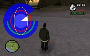 | 33 KB | Screen shot for circle example shader resource | 1 |
| 19:55, 26 November 2015 | Client pe 3.png (file) | 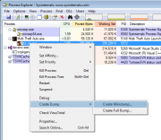 | 39 KB | 1 | |
| 19:54, 26 November 2015 | Client pe 2.png (file) | 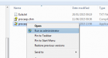 | 13 KB | 1 | |
| 19:54, 26 November 2015 | Client pe 1.png (file) | 93 KB | 1 | ||
| 20:34, 29 April 2015 | Event source mapelement.png (file) | 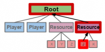 | 8 KB | 2 | |
| 20:33, 29 April 2015 | Event source resource.png (file) | 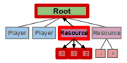 | 8 KB | 2 | |
| 20:32, 29 April 2015 | Event source player.png (file) | 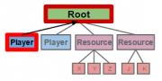 | 8 KB | 2 | |
| 20:31, 29 April 2015 | Event source root.png (file) | 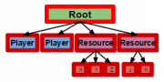 | 8 KB | 2 | |
| 20:04, 22 February 2014 | Shader hud mask.jpg (file) | 20 KB | 1 | ||
| 02:48, 9 February 2013 | Client pm 5.jpg (file) | 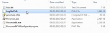 | 23 KB | 1 | |
| 02:48, 9 February 2013 | Client pm 4.jpg (file) | 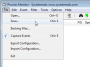 | 22 KB | 1 | |
| 02:48, 9 February 2013 | Client pm 3.jpg (file) | 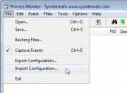 | 22 KB | 1 | |
| 02:48, 9 February 2013 | Client pm 2.jpg (file) |  |
18 KB | 1 | |
| 02:47, 9 February 2013 | Client pm 1.jpg (file) | 39 KB | 1 | ||
| 06:36, 27 April 2012 | Shader detail.jpg (file) | 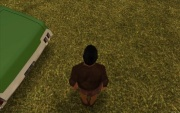 | 23 KB | 1 | |
| 03:20, 25 April 2012 | Shader radial blur.jpg (file) | 23 KB | 1 | ||
| 00:21, 22 March 2012 | Mta game proccess.png (file) | 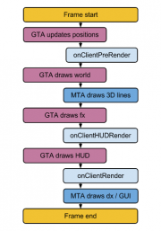 | 26 KB | 1 | |
| 17:40, 3 March 2012 | Core.png (file) | 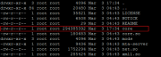 | 7 KB | 1 | |
| 05:40, 30 January 2012 | Shader flag.jpg (file) | 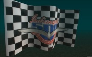 | 14 KB | 1 | |
| 06:27, 9 November 2011 | ShaderContrast.jpg (file) | 32 KB | 1 | ||
| 04:20, 2 November 2011 | Tre.png (file) |  |
28 KB | 1 | |
| 01:31, 2 November 2011 | SkidMarks.jpg (file) | 29 KB | 1 | ||
| 01:25, 2 November 2011 | TexNames.jpg (file) | 22 KB | Reverted to version as of 11:42, 1 September 2011 | 3 | |
| 23:52, 26 September 2011 | RoadShine3Screen.jpg (file) | 15 KB | 2 | ||
| 22:26, 6 September 2011 | Blipid0u.png (file) |  |
221 bytes | 1 | |
| 22:26, 6 September 2011 | Blipid0s.png (file) |  |
141 bytes | 1 | |
| 22:26, 6 September 2011 | Blipid0d.png (file) |  |
227 bytes | 1 | |
| 23:32, 5 August 2011 | BlockWorld.jpg (file) | 22 KB | 1 | ||
| 07:07, 7 July 2011 | BloomScreen.jpg (file) | 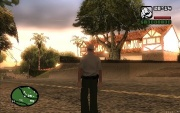 | 32 KB | 1 | |
| 03:42, 7 July 2011 | WaterScreen.jpg (file) | 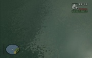 | 12 KB | 1 | |
| 04:36, 6 July 2011 | CarPaintScreen.jpg (file) | 20 KB | 1 | ||
| 01:01, 6 July 2011 | PedShellScreen.jpg (file) | 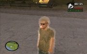 | 21 KB | 1 | |
| 23:09, 5 July 2011 | PedMorphScreen.jpg (file) |  |
24 KB | 1 | |
| 19:07, 5 July 2011 | UVScriptedScreen.jpg (file) | 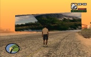 | 28 KB | 1 | |
| 18:27, 5 July 2011 | RoadShine2Screen.jpg (file) | 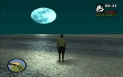 | 17 KB | 1 | |
| 03:26, 5 July 2011 | UVScollScreen.jpg (file) | 25 KB | Screen shot for UV Scroll example shader resource | 1 | |
| 02:20, 5 July 2011 | RoadShineScreen.jpg (file) | 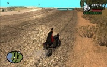 | 31 KB | Screen shot for road shine example shader resource | 1 |
| 06:41, 30 July 2010 | Perfbrow-lib-mem.png (file) | 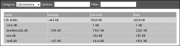 | 10 KB | 2 | |
| 06:38, 30 July 2010 | Perfbrow-lib-mem-i.png (file) | 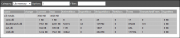 | 15 KB | 1 | |
| 06:31, 30 July 2010 | Perfbrow-lua-time.png (file) | 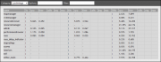 | 24 KB | Reverted to version as of 06:18, 30 July 2010 | 8 |
| 06:31, 30 July 2010 | Perfbrow-lua-mem-race.png (file) | 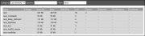 | 14 KB | 1 | |
| 06:27, 30 July 2010 | Perfbrow-lua-mem.png (file) |  |
30 KB | 1 | |
| 06:23, 30 July 2010 | Perfbrow-lua-time-d-admin.png (file) | 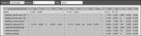 | 22 KB | 1 | |
| 06:19, 30 July 2010 | Perfbrow-lua-time-abc.png (file) | 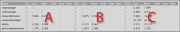 | 17 KB | 1 | |
| 10:40, 12 September 2009 | Gittree88.png (file) | 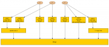 | 13 KB | Diagram for special purpose | 1 |
| 23:20, 16 August 2009 | Ccw crash 16Aug2009.png (file) | 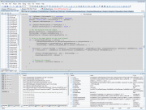 | 68 KB | VS2008 screenshot | 1 |
{kind=link}
{kind=link}
{kind=link}
{kind=link}
{kind=link}
{kind=link}
{kind=link}
{kind=link}
{kind=link}
{kind=link}
{kind=link}
{kind=link}
{kind=link}
{kind=link}
{kind=link}
{kind=link}
{kind=link}
{kind=link}
{kind=link}
{kind=link}
{kind=link}
{kind=link}
{kind=link}
{kind=link}
{kind=link}
{kind=link}
{kind=link}
{kind=link}
{kind=link}
{kind=link}
{kind=link}
{kind=link}
{kind=link}
{kind=link}
{kind=link}
{kind=link}
{kind=link}
{kind=link}
{kind=link}
{kind=link}
{kind=link}
{kind=link}
{kind=link}